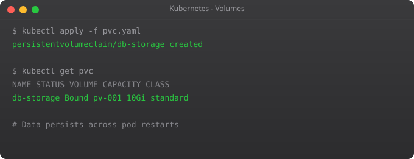

Kubernetes Tutorial — Part 6: Persistent Storage and Volumes

Pods are ephemeral by design. When a pod restarts — whether due to a crash, a node failure, or a rolling update — its container filesystem starts fresh. Every file written during the previous pod's lifetime is gone. For stateless web servers, this is perfectly fine. For databases, file uploads, or any data you need to keep, this is a disaster waiting to happen.
I learned this the hard way. Early in my Kubernetes journey, I deployed a PostgreSQL database inside a pod as part of a learning project. It worked great for two days. Then I did a rolling update, the pod got rescheduled, and every row in the database was gone. The database was running, but it had no data. That was my introduction to why storage in Kubernetes needs special handling.
Kubernetes has a well-designed storage system built around three objects: Volumes, PersistentVolumes, and PersistentVolumeClaims. Understanding how they relate to each other is the key to running stateful workloads reliably.
Volumes — Basic Pod Storage
The simplest type of storage in Kubernetes is a Volume. A Volume is storage that is attached to a pod and shared among the containers inside that pod. Unlike the container filesystem, a Volume survives container restarts within the same pod. But it does not survive the pod itself being deleted or rescheduled.
apiVersion: v1
kind: Pod
metadata:
name: shared-storage-pod
spec:
containers:
- name: writer
image: busybox
command: ["sh", "-c", "while true; do date >> /data/log.txt; sleep 5; done"]
volumeMounts:
- name: shared-data
mountPath: /data
- name: reader
image: busybox
command: ["sh", "-c", "while true; do cat /data/log.txt; sleep 10; done"]
volumeMounts:
- name: shared-data
mountPath: /data
volumes:
- name: shared-data
emptyDir: {} # Created fresh when pod starts, deleted when pod endsThe emptyDir volume type creates an empty directory when the pod starts. Both containers in the pod can read and write to it. When the pod is deleted, the data is deleted too. This is useful for temporary sharing between containers in the same pod — like a web server and a log collector sidecar — but not for persistent storage.
PersistentVolumes and PersistentVolumeClaims
For data that must survive beyond the lifetime of a single pod, you need PersistentVolumes (PV) and PersistentVolumeClaims (PVC). These decouple the storage provisioning from the storage consumption.
A PersistentVolume is the actual storage resource — a disk on the host, an NFS share, or a cloud disk like AWS EBS or GCP Persistent Disk. An admin provisions it, or Kubernetes provisions it dynamically.
A PersistentVolumeClaim is a pod's request for storage. It says "I need 5GB of storage with ReadWriteOnce access." Kubernetes finds a matching PV and binds them together.
apiVersion: v1
kind: PersistentVolume
metadata:
name: my-pv
spec:
capacity:
storage: 5Gi
accessModes:
- ReadWriteOnce
persistentVolumeReclaimPolicy: Retain
hostPath:
path: /mnt/data # On Minikube, this is a path on the VMapiVersion: v1
kind: PersistentVolumeClaim
metadata:
name: my-pvc
spec:
accessModes:
- ReadWriteOnce
resources:
requests:
storage: 5Gikubectl apply -f pv.yaml
kubectl apply -f pvc.yaml
# Check if PVC is bound to the PV
kubectl get pv
kubectl get pvc
# STATUS should show "Bound" for the PVCUsing a PVC in a Pod
apiVersion: v1
kind: Pod
metadata:
name: persistent-pod
spec:
containers:
- name: app
image: nginx
volumeMounts:
- name: storage
mountPath: /usr/share/nginx/html
volumes:
- name: storage
persistentVolumeClaim:
claimName: my-pvckubectl apply -f persistent-pod.yaml
# Write a file inside the pod
kubectl exec persistent-pod -- sh -c "echo 'Hello Persistent World' > /usr/share/nginx/html/index.html"
# Delete the pod
kubectl delete pod persistent-pod
# Recreate the pod
kubectl apply -f persistent-pod.yaml
# Check if the file survived
kubectl exec persistent-pod -- cat /usr/share/nginx/html/index.html
# Should still output: Hello Persistent WorldStorageClasses — Dynamic Provisioning
Manually creating PersistentVolumes for every application does not scale. In real clusters, StorageClasses enable dynamic provisioning — Kubernetes automatically creates a PV whenever a PVC is submitted, based on the StorageClass configuration.
apiVersion: storage.k8s.io/v1
kind: StorageClass
metadata:
name: fast-storage
provisioner: kubernetes.io/aws-ebs
parameters:
type: gp3
fsType: ext4
reclaimPolicy: Delete
volumeBindingMode: WaitForFirstConsumerapiVersion: v1
kind: PersistentVolumeClaim
metadata:
name: database-storage
spec:
storageClassName: fast-storage
accessModes:
- ReadWriteOnce
resources:
requests:
storage: 20GiOn Minikube, there is a built-in StorageClass called "standard" that you can use immediately. Run kubectl get storageclass to see it.
Running PostgreSQL with Persistent Storage
Let us put everything together and run a real database with persistent storage.
apiVersion: v1
kind: PersistentVolumeClaim
metadata:
name: postgres-pvc
spec:
accessModes:
- ReadWriteOnce
resources:
requests:
storage: 5Gi
---
apiVersion: apps/v1
kind: Deployment
metadata:
name: postgres
spec:
replicas: 1
selector:
matchLabels:
app: postgres
template:
metadata:
labels:
app: postgres
spec:
containers:
- name: postgres
image: postgres:15
env:
- name: POSTGRES_PASSWORD
valueFrom:
secretKeyRef:
name: db-credentials
key: DB_PASSWORD
- name: POSTGRES_DB
value: myapp
ports:
- containerPort: 5432
volumeMounts:
- name: postgres-data
mountPath: /var/lib/postgresql/data
volumes:
- name: postgres-data
persistentVolumeClaim:
claimName: postgres-pvcAccess Modes Explained
Storage access modes determine how many pods can mount the volume simultaneously.
ReadWriteOnce (RWO) — The volume can be mounted as read-write by a single node. Used for databases and most applications. This is the most common mode.
ReadOnlyMany (ROX) — The volume can be mounted as read-only by many nodes simultaneously. Used for shared configuration or media files that multiple pods need to read.
ReadWriteMany (RWX) — The volume can be mounted as read-write by many nodes simultaneously. Used for shared file storage — requires NFS or cloud file services like Amazon EFS or Azure Files. Not all volume types support this.
What is Next
You can now run stateful workloads in Kubernetes. In Part 7, we cover Namespaces and Resource Management — how to organise workloads by team or environment within a single cluster, and how to set CPU and memory limits to prevent any one application from consuming all cluster resources.
Frequently Asked Questions
What happens to pod data when it restarts?
All container filesystem data is lost when a pod restarts or reschedules. Use PersistentVolumes for any data you cannot lose — databases, uploads, or anything written to disk during runtime.
What is the difference between PV and PVC?
A PersistentVolume is the actual storage resource (a disk). A PersistentVolumeClaim is a pod's request for storage. Kubernetes binds a matching PV to the PVC automatically. The separation lets admins manage storage independently from application developers.
What is a StorageClass?
A StorageClass enables dynamic provisioning — Kubernetes automatically creates a PV when a PVC references it. Cloud providers offer StorageClasses for their disk types (gp3, io1, etc.), so you never need to manually create PVs in production.
Can two pods share the same PersistentVolume?
Depends on the access mode. ReadWriteOnce allows only one node. ReadWriteMany allows multiple pods on multiple nodes simultaneously — requires NFS or cloud file storage backends that support this mode.
When should I use StatefulSet instead of Deployment?
Use StatefulSets for databases and any application needing stable network identity and per-replica persistent storage. Each StatefulSet pod gets its own dedicated PVC that persists even when the pod is deleted and recreated.
Key takeaways
- ConfigMaps for non-sensitive config (feature flags, URLs, regions). Secrets for sensitive (passwords, tokens, certs).
- K8s Secrets are base64-encoded, not encrypted. Enable encryption-at-rest on etcd, or use external secret managers (Vault, AWS Secrets Manager).
- Mount config as files or env vars — files are usually better because they update without restarting pods (with the right setup).
- Don't commit secrets to git. Use sealed-secrets, SOPS, or external-secrets-operator. This is the #1 mistake I see in K8s repos.